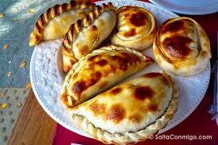
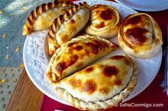

TooFood
El Gusto de Comer!

 



Tomorrowland desvela los escenarios que encontraremos en ‘The Story Of Planaxis’
2018 pone en marcha su maquinaria. El festival belga ha dado a conocer las marcas que se repartirán en cada uno de los escenarios que encontraremos durante los dos fines de semana de celebración y, un año más, cabe destacar que volverá a contar con lo mejor de lo mejor de la electrónica internacional. Como podéis observar en la imagen, algunos de estos escenarios podréis encontrarlos tanto si optáis por ir del 20 al 22 de Julio…mas>